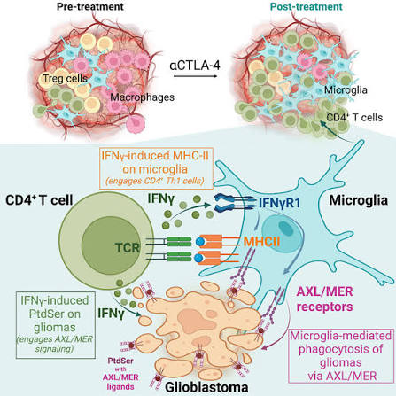
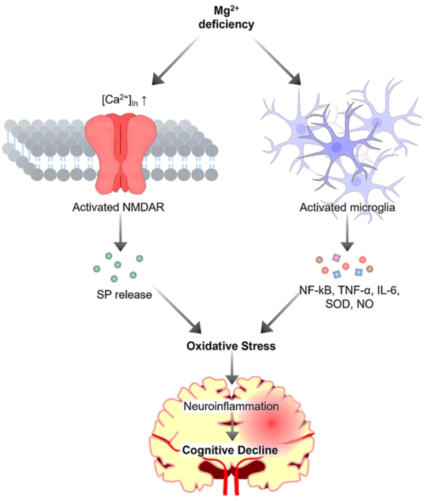
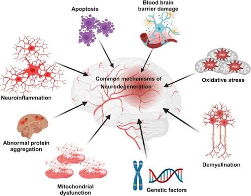
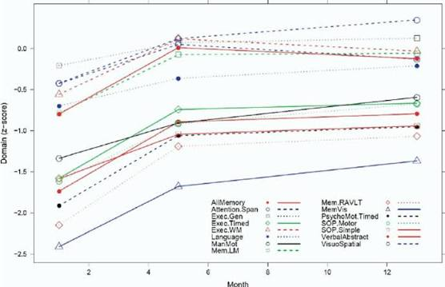

Elon Musk Reveals The 15-Second Vicks Trick For Memory Loss and Dementia!
Why your memories (and those of the people you love) aren't disappearing because of age, but because a "toxic trash heap" is paralyzing your brain's cleaning system. Discover the "Sardinia Base" that makes the trick actually work.
The "Toxic Trash" Paralyzing Your Memory
Have you ever felt that sudden "fear" of forgetting something? Maybe it was an old friend's name. Maybe it was where you left your keys. Or worse: maybe it was when your father, who was always sharp, called you "daughter" when you are a man... or when your 70-year-old mother didn't recognize her own nephew at the last family gathering.
The industry wants to convince you that this is "aging." That it's "normal."
They are wrong.
It's not aging. It's toxic accumulation. Your brain isn't "getting old." It's clogged. And while its cleaning crew (Microglia) remains paralyzed, every day that passes is another day of "trash" falling into your memory system.


The "Broken Armor": Why Cleaning Failed
Recently, Elon Musk mentioned in a discussion about cognitive optimization a "hack" that uses a common drugstore product: Vicks.
The idea is to use the olfactory pathway (smell) to "wake up" the limbic system, the seat of memory. It's a powerful sensory trigger.
But here is the "catch" that nobody tells you:
The Vicks Trick is like pressing the "Start" button on a car. If your "engine" (Microglia) is frozen by toxins, the button does nothing.
Most people try the "15-Second Trick" alone and think it doesn't work. The error isn't in the trick. The error is in the "base."
Take a close look at the image above. This is your Microglia, your "cleaning crew."
At 50, this cell loses its natural "armor." Without that protection, it tries to clear toxic proteins (Tau) and dies in the process. The result? The brain stops cleaning itself and starts rotting from the inside.
That's why the "Vicks Trick" (the alarm) doesn't work alone. You are ringing the bell of a house where the janitor has died. You need to revive the janitor before expecting him to open the door.

1. The "Flat Tire" Error: Why Your Medication Isn't Working
Most dementia medications focus on increasing acetylcholine for a few hours. It's like putting a band-aid on a flat tire.
While the "Cleaning Crew" remains paralyzed, toxic waste keeps building up. You're buying temporary relief while structural damage continues to advance.
The question is: How many "band-aids" are you willing to buy before fixing the tire?

2. Gasoline in a Seized Engine: The Limit of Ginkgo Biloba
Maybe you've already tried Ginkgo Biloba or Omega-3. These supplements are great for circulation.
But circulation isn't cleaning. It's like putting gasoline in a car with a seized engine. The tank is full, but the car doesn't move.
You don't need more flow. You need repair. You need the compound that provides the "armor" Microglia is missing. Without it, any supplement is just money down the drain.

3. Your Brain is a 100-Year-Old House with a Clogged Recycling System
Imagine your house is 100 years old. The paint is peeling (memories fading). You can repaint the walls (medication), but dirt keeps falling from the ceiling.
The only solution is to fix the recycling system. When you activate the "Cleaning Crew," the house starts cleaning itself. The walls no longer need paint; they become like new again. That's what we call "Structural Restoration."
The "Biological Reset": Activating the Cleaning Team
So, how do you "wake up" this crew without going through months of clinical trials?
You need the "Sardinia Protocol." A two-ingredient ritual that provides the "armor" of lithium orotate and the "fuel" of epicatechin (pure cocoa) for Microglia.
But for this protocol to have maximum impact, it must be activated by the 15-Second Olfactory Trigger (the Vicks Trick).
It isn't a miracle pill. It's a Biological Reset.
One capsule a day that restores the clarity, dignity, and presence the disease took away.

The Video That Shows the "Cleaning" Happening
In the next 4-minute VSL, Dr. Voss will:
- Show the Exact Mechanism of how Lithium Orotate and Epicatechin "armor" the Microglia.
- Reveal How to Use the 15-Second Trick (Vicks) for maximum daily impact.
- Present MRI scan data from a 72-year-old patient who recovered clarity in 90 days.
This isn't theory. It's Structural Restoration.
If you want to recover the dignity, presence, and memory of the people you love (or your own), don't skip the video.

Watch the Video: The 15-Second Trick and the Sardinia Protocol* The video shows real, peer-reviewed MRI data.
What Happens When the "Fog" Lifts
"I thought it was a lack of love. It was a lack of mechanism. Since we started the 15-second ritual and the protocol, my mother has stopped getting lost in the living room. She called me by my name. I cried in the car."
"The Elon trick made me skeptical. But the 'armor' of lithium orotate made the Vicks work. Now he remembers our honeymoon. The fog is gone."